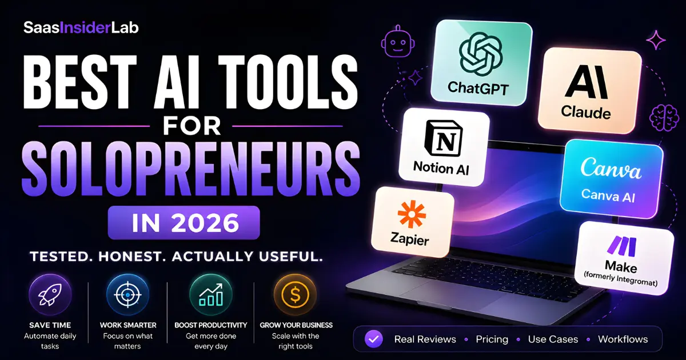
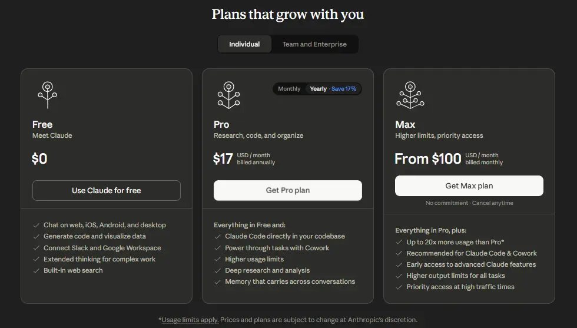
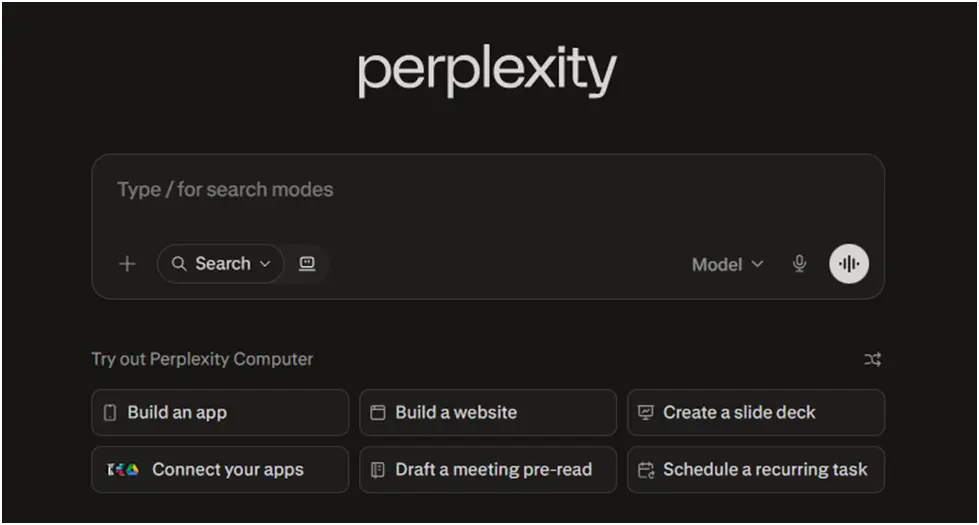

Running a business solo in 2026 looks very different from what it did just three years ago. The biggest shift? AI tools have moved from a nice-to-have novelty into genuine daily workhorses for writers, consultants, designers, coaches, and every other kind of solopreneur you can think of.
But here's the thing: the internet is full of lists that just name twenty tools, add a generic description, and call it a day. That's not what this is. This article is based on real workflows, real frustrations, and real use cases for people who wear every hat in their business and can't afford to waste money on tools that overpromise.
Whether you're a freelancer trying to speed up client work, a creator building a one-person media brand, or a small business owner trying to do more without hiring anyone, this guide will help you figure out which AI productivity tools are actually worth your time and money in 2026.
1. Why Solopreneurs Are Leaning Into AI Right Now
The appeal isn't complicated. As a solopreneur, your biggest bottleneck is almost always time. You're the one writing the emails, editing the content, researching the competition, posting on social media, and handling admin. AI tools don't eliminate that work, but they do compress it significantly.
The other big reason is cost. Hiring a copywriter, a VA, a designer, and a researcher used to mean thousands of dollars a month. Now, a stack of two or three AI subscriptions can cover a meaningful portion of that work for under $100 a month. That math is hard to ignore.
Understanding where they shine and where they fall short is the whole point of this guide.
2. AI Writing Tools: Where Most People Start
For most solopreneurs, writing is the first bottleneck AI can visibly solve. Whether it's drafting emails, writing content, or just getting unstuck on a blank page, these tools make a real difference — if you use them right.
ChatGPT (OpenAI)
ChatGPT is still the name most people know first, and for good reason. The GPT-4o model handles long-form content, emails, social posts, sales copy, and brainstorming with impressive fluency. It's also gotten significantly better at following specific formatting instructions.
| Best for | Drafting content, brainstorming ideas, writing email sequences, rewriting existing copy |
| Who should use it | Any solopreneur who creates written content regularly |
| Biggest advantage | Extremely versatile; handles almost any writing task with proper prompting |
| Biggest limitation | Output can feel generic without detailed prompts; needs human editing for voice |
| Free plan? | Yes — GPT-4o mini is free. ChatGPT Plus costs $20/month for full GPT-4o access |
| Beginner-friendly? | Yes, one of the most intuitive tools to get started with |
Claude (Anthropic)
Claude has become a serious contender for content creators and consultants who need longer, more nuanced output. It handles complex reasoning tasks well and tends to produce prose that feels less robotic than other models. For things like long reports, thoughtful emails, or in-depth analysis, many solopreneurs prefer it.

| Best for | Long-form writing, nuanced analysis, drafting reports, summarizing complex documents |
| Who should use it | Writers, consultants, coaches who need depth over quick output |
| Biggest advantage | Excellent at maintaining tone consistency and handling large documents |
| Biggest limitation | Less of an all-rounder for creative tasks compared to ChatGPT |
| Free plan? | Yes — Claude.ai has a free tier. Pro plan starts at $20/month |
| Beginner-friendly? | Yes — clean interface, easy to start with |
Grammarly
Grammarly sits in a slightly different category. It's not a content generator — it's a writing assistant that catches errors, tightens your sentences, and helps maintain a consistent tone. For solopreneurs sending client proposals, writing newsletters, or posting content, it's one of the best final-pass AI tools for freelancers available.
| Best for | Proofreading, tone adjustment, clarity improvements across all written output |
| Who should use it | Anyone who communicates professionally in writing (which is basically everyone) |
| Biggest advantage | Works inside Gmail, Google Docs, LinkedIn, and most browsers automatically |
| Biggest limitation | Not a content creator; it edits, it doesn't generate |
| Free plan? | Yes — solid free tier. Premium costs around $12–15/month |
| Beginner-friendly? | Very — just install and it runs in the background |
3. AI Research Tools: Work Smarter, Not Longer
Research is one of the most time-consuming parts of running a knowledge-based business. These tools cut that time down significantly without sacrificing accuracy.
Perplexity AI
Perplexity is one of the most underrated tools in the solopreneur AI stack. Think of it as a search engine that actually synthesizes answers instead of giving you ten blue links to wade through. It cites its sources in real time, which makes it far more trustworthy than asking a standard AI chatbot to recall facts.

| Best for | Market research, competitor analysis, fact-checking, staying on top of industry news |
| Who should use it | Freelancers, consultants, content creators who do regular research |
| Biggest advantage | Real-time web search with cited sources — cuts research time dramatically |
| Biggest limitation | Not ideal for long-form content generation; best used for information gathering |
| Free plan? | Yes — generous free plan. Pro is around $20/month |
| Beginner-friendly? | Very — works like a search engine, almost no learning curve |
4. Productivity and Organization Tools
A scattered solopreneur is an ineffective one. These tools help you keep your work organized, your calendar sane, and your meeting notes actually actionable.
Notion AI
Notion has been a solopreneur favourite for project management and knowledge organization for years. With Notion AI baked in, it becomes something more: a workspace where you can write a meeting summary, generate action items, draft a content calendar, and organize everything in one place without switching apps.
| Best for | Project management, content planning, note-taking, client portals, knowledge bases |
| Who should use it | Organized solopreneurs who want one hub for their business brain |
| Biggest advantage | AI is embedded in context — it understands your existing notes and docs |
| Biggest limitation | Notion has a learning curve; setup takes real time upfront |
| Free plan? | Yes — Notion has a free plan. Notion AI is an add-on at ~$10/month |
| Beginner-friendly? | Moderate — powerful, but takes a few weeks to feel natural |
Otter AI
If you're on calls with clients, doing podcast interviews, or running any kind of recorded meeting, Otter AI saves you hours. It transcribes in real time, generates summaries, and highlights action items automatically. For solopreneurs who hate writing meeting notes, this is as close to magic as it gets.
| Best for | Meeting transcription, client call summaries, podcast notes, interview quotes |
| Who should use it | Coaches, consultants, podcasters, anyone on frequent video or voice calls |
| Biggest advantage | Real-time transcription with automatic summaries and action item extraction |
| Biggest limitation | Accuracy drops with heavy accents or multiple overlapping speakers |
| Free plan? | Yes — 300 minutes/month free. Pro starts around $10/month |
| Beginner-friendly? | Very — connect to Zoom or Google Meet and it runs automatically |
5. Design and Image Tools for Non-Designers
You don't need a design degree to produce professional visual content in 2026. These best AI software for creators tools make visual work genuinely accessible for one-person businesses.
Canva AI
Canva was already the go-to design tool for non-designers, and its AI features have made it even more valuable. The Magic Design feature generates complete layouts from a prompt. The AI image generator handles custom visuals. The background remover works in seconds. For solopreneurs who need to produce social graphics, presentations, pitch decks, or brand assets without a design budget, Canva is hard to beat.
Many solo business owners also use Canva alongside other specialized tools for content planning, caption writing, scheduling, and audience growth. Here's our guide to the best AI tools for social media content creators if social media marketing is an important part of your business.
While Canva covers most everyday design needs, some creators eventually move to more specialized AI visual creation tools when they need greater creative flexibility.
| Best for | Social media graphics, presentations, brand kits, marketing materials, thumbnails |
| Who should use it | Creators, coaches, freelancers, anyone producing regular visual content |
| Biggest advantage | Huge template library plus AI generation in one beginner-friendly platform |
| Biggest limitation | AI image quality is improving but still not on par with dedicated image tools |
| Free plan? | Yes — very capable free tier. Canva Pro is ~$15/month and worth it |
| Beginner-friendly? | Extremely — drag-and-drop, no design experience needed |
6. Automation Tools: Do More Without More Hours
Automation is where solopreneurs get the most leverage. Setting up a workflow once and having it run on its own is the closest thing to cloning yourself that currently exists.
Zapier
Zapier is the workhorse of no-code automation and has been for years. In 2026, its AI-powered Zap builder lets you describe a workflow in plain English and it builds the automation for you. For solopreneurs, this means you can connect your CRM to your email tool, auto-send follow-ups, log leads into Notion, or post scheduled content without writing a single line of code.
| Best for | Connecting apps, automating repetitive workflows, reducing manual data entry |
| Who should use it | Any solopreneur spending time on repetitive digital tasks |
| Biggest advantage | Connects 6,000+ apps; AI builder makes setup much faster than before |
| Biggest limitation | Costs can add up quickly on higher task volumes; pricing tiers can be confusing |
| Free plan? | Yes — 100 tasks/month free. Paid plans start around $20/month |
| Beginner-friendly? | Moderate — the AI builder helps, but complex flows still need some logic thinking |
Make (formerly Integromat)
Make is Zapier's more powerful and more affordable alternative. If your automation needs are complex — multi-step flows, conditional logic, data transformation — Make handles it better and at a lower price point. The visual workflow builder is genuinely satisfying to use once you get past the initial learning curve.
| Best for | Complex multi-step automations, data transformation, advanced workflows |
| Who should use it | Solopreneurs with more technical comfort who want deeper automation control |
| Biggest advantage | Far more flexible and affordable than Zapier for complex use cases |
| Biggest limitation | Steeper learning curve; less beginner-friendly than Zapier |
| Free plan? | Yes — 1,000 operations/month free. Paid plans start around $9/month |
| Beginner-friendly? | Not immediately — start with Zapier if you're new to automation |
7. Quick Comparison Snapshot
Here's a side-by-side view of everything covered in this guide. All of these tools have free plans, so you can test before you commit.
| Tool | Category | Free Plan? | Starting Price |
|---|---|---|---|
| ChatGPT | Writing | Yes | $20/mo (Plus) |
| Claude | Writing & Analysis | Yes | $20/mo (Pro) |
| Grammarly | Writing Assistant | Yes | ~$12/mo (Premium) |
| Perplexity | Research | Yes | $20/mo (Pro) |
| Notion AI | Productivity | Yes | $10/mo (AI add-on) |
| Otter AI | Transcription | Yes | ~$10/mo (Pro) |
| Canva AI | Design | Yes | ~$15/mo (Pro) |
| Zapier | Automation | Yes | $20/mo (Starter) |
| Make | Automation | Yes | $9/mo (Core) |
8. Frequently Asked Questions
If you're completely new to AI tools, start with ChatGPT or Claude. Both have solid free tiers, are intuitive to use, and cover the widest range of tasks from writing to brainstorming to research. Once you've built a habit around one of those, add Canva AI for design and Grammarly for writing polish. That three-tool stack alone will make a visible difference in your productivity.
For most freelancers, yes — particularly if you're doing any kind of content creation, research, or client communication regularly. A $20/month ChatGPT subscription typically pays for itself many times over in time saved. The key is to actually use the tool consistently instead of signing up and forgetting about it. Start with one paid subscription and measure the real-world time savings before adding more.
Partially. AI tools handle a surprising amount of what a basic VA does: drafting emails, summarizing documents, scheduling logic, basic research, and content creation. What they don't do is make judgment calls, manage nuanced client relationships, or handle tasks that require real-world action. A combination of AI tools and a part-time human VA often makes more sense than trying to go fully AI-only for complex operational tasks.
Content creators tend to get the most value from ChatGPT or Claude for writing and ideation, Perplexity for research, Canva AI for visual content, and Otter AI if they record interviews or podcasts. That stack covers the core content creation workflow from idea to research to writing to visuals without requiring a team behind you.
Generally yes, but with caveats. Avoid pasting confidential client information into public AI tools unless you've reviewed the privacy policy. Most major platforms offer settings to opt out of data training, and enterprise plans typically offer stronger data handling guarantees. For anything sensitive, either use the privacy settings or handle that piece manually. Always review and edit AI output before sending it to clients — your reputation depends on quality, not speed alone.
9. Final Thoughts
If you're a solopreneur in 2026 and you're not using at least a few AI tools in your workflow, you're working harder than you need to. That's the honest truth.
But the flip side is also true: signing up for ten tools you never master won't move the needle either. The best approach is to start narrow. Pick one AI writing tool. If you're still deciding between the major AI assistants, our detailed ChatGPT vs Claude vs Gemini comparison can help you choose the right starting point. Then use it daily for a month and focus on building the habit of prompting well. Then add one more tool that addresses your next biggest time sink — whether that's research, design, or automation.
Start small, stay consistent, and let the time savings compound.